6.2 gmapping 激光 SLAM 建图
本节在 6.1 搭建好的仿真环境基础上，使用 gmapping 功能包，通过键盘遥控 mrobot 走遍房间，
增量式地构建出二维占据栅格地图，并用 map_saver 把地图保存为 map.pgm 与 map.yaml。
本节配套功能包位于仓库：
src/chap6/catkin_ws/src/mrobot_navigation/
src/chap6/catkin_ws/src/mrobot_teleop/
1. 本节目标
- 理解 gmapping 基于粒子滤波（RBPF）的建图原理与输入输出；
- 安装并配置
gmapping、map_server等功能包； - 用三个终端分别启动 Gazebo、gmapping(+rviz)、键盘遥控；
- 遥控小车遍历房间，在 rviz 中观察地图逐步建立；
- 用
map_saver保存地图，并读懂map.yaml各字段； - 记录并分析高速建图产生的噪点问题，给出改进方法。
2. 背景知识
2.1 占据栅格地图
二维导航中最常用的地图是占据栅格地图（Occupancy Grid Map）：把连续空间离散成大小相同的格子， 每个格子存储一个概率值，表示该格子被障碍物占据的可能性：
- 黑色（概率接近 100）：障碍物，如墙体；
- 白色（概率接近 0）：可通行的空闲区域；
- 灰色（未知）：尚未观测到的区域。
栅格边长由地图分辨率决定，本节地图分辨率为 0.05 m/pix，即每个像素对应实际 5 厘米。
2.2 gmapping 与 RBPF
gmapping 是 ROS 中经典的开源激光 SLAM 包，其节点名为 slam_gmapping，内部采用
Rao-Blackwellized 粒子滤波（RBPF）：
- 用一组粒子表示机器人可能的位姿（位置 + 朝向）分布；
- 每来一帧激光数据，结合里程计运动模型对每个粒子进行位姿预测；
- 根据激光观测与地图的匹配程度给每个粒子赋权重，匹配越好权重越高；
- 按权重重采样，丢弃低权重粒子、复制高权重粒子；
- 对每个粒子各自维护一张地图，最终输出权重最高的地图。
RBPF 把"定位"和"建图"两个问题分开：先估计机器人轨迹，再在已知轨迹上计算地图，
从而降低了计算复杂度。粒子数越多越鲁棒，但计算量越大，本节配置 particles=80。
2.3 输入与输出
slam_gmapping 节点的关键输入输出：
| 方向 | 话题/TF | 含义 |
|---|---|---|
| 输入 | /scan（sensor_msgs/LaserScan） |
激光雷达扫描数据 |
| 输入 | /tf：odom → base_footprint → base_link → laser_link |
里程计与坐标系变换 |
| 输出 | /map（nav_msgs/OccupancyGrid） |
占据栅格地图 |
| 输出 | /tf：map → odom |
地图坐标系到里程计坐标系的校正 |
6.1 中 mrobot 的差速插件已提供 /odom 与 odom → base_footprint 的 TF，rplidar 插件提供
/scan 与 laser_link，因此 gmapping 所需的话题和 TF 链在仿真中已完整。
3. 安装功能包
更新软件源并安装 gmapping、map_server 与深度图转激光（深度相机方案备用）：
sudo apt update
sudo apt install -y ros-noetic-gmapping ros-noetic-map-server ros-noetic-depthimage-to-laserscan
安装过程中会自动安装其依赖（如 openslam_gmapping、libsdl 系列等）：
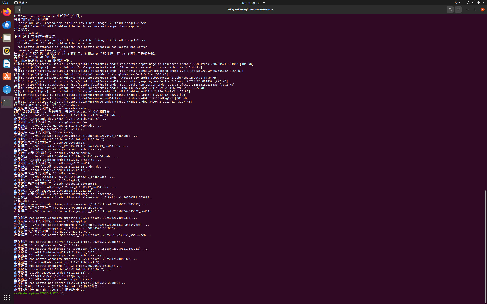
看到 "新安装了 ... 个软件包" 且无报错即安装成功。可用以下命令确认节点存在：
rospack find gmapping
rosrun map_server map_saver -h
4. 准备功能包
gmapping 的节点参数与 rviz 配置在 mrobot_navigation 包中，键盘遥控在 mrobot_teleop 包中。
从源码目录把这两个包（连同 mrobot_description）复制到工作空间 src 下。
注意：shell 变量（如
$SRC）只在定义它的那个终端有效，换终端或重新登录后变量会失效。 若变量为空，cp "$SRC/..."会被展开成/robot_mrobot/...而报错。建议直接使用绝对路径， 让每条命令自包含。
本示例第一次复制时因 $SRC 为空而失败：
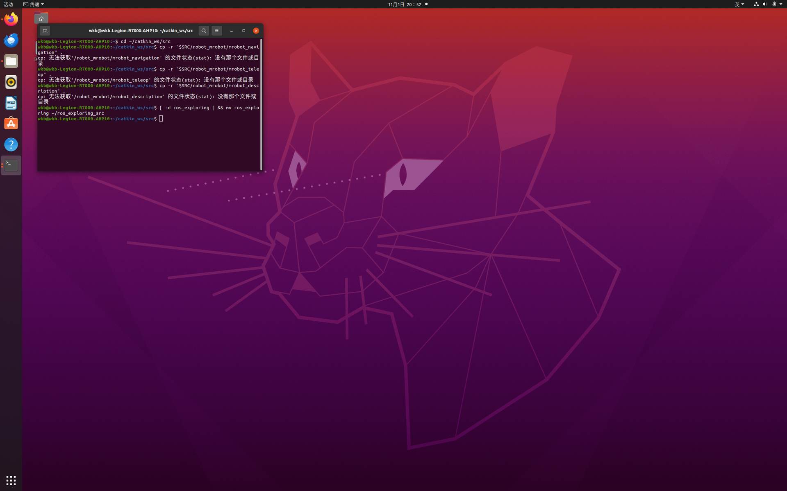
改用绝对路径重新复制三个包：
# 若源码不存在则重新克隆
git clone https://gitee.com/changjy/ros_exploring.git ~/ros_exploring_src
# 用绝对路径复制
cp -r ~/ros_exploring_src/robot_mrobot/mrobot_navigation ~/catkin_ws/src/
cp -r ~/ros_exploring_src/robot_mrobot/mrobot_teleop ~/catkin_ws/src/
cp -r ~/ros_exploring_src/robot_mrobot/mrobot_description ~/catkin_ws/src/
复制后确认四个 mrobot 包都已到位：
ls -d ~/catkin_ws/src/mrobot_*
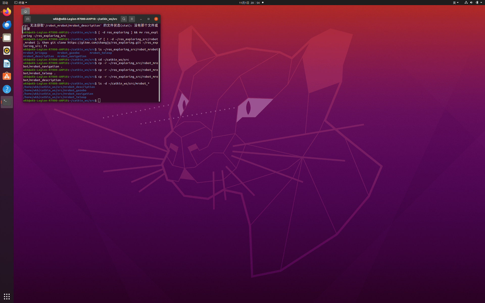
5. 适配 ROS Noetic
教程最初基于 ROS Kinetic（Python2），在 Noetic（Python3）下需要做两处适配。
5.1 键盘脚本改为 Python3 并加可执行权限
原始 mrobot_teleop/scripts/mrobot_teleop.py 是 Python2 代码：
- 首行解释器为
#!/usr/bin/env python，而 Noetic 下默认python可能不存在或指向 Python3； - 使用了 Python2 语法
print msg、print vels(...)、裸except:等，在 Python3 下会直接报语法错误。
本仓库已提供修复后的脚本，主要修改：
#!/usr/bin/env python → #!/usr/bin/env python3
print msg → print(msg)
print vels(speed,turn) → print(vels(speed,turn))
except: → except Exception as e:
print e → print(e)
同时脚本必须具备可执行权限，否则 roslaunch 会报
can't locate node [mrobot_teleop.py] in package [mrobot_teleop]：
chmod +x ~/catkin_ws/src/mrobot_teleop/scripts/mrobot_teleop.py
可用以下命令验证语法与权限：
python3 -m py_compile ~/catkin_ws/src/mrobot_teleop/scripts/mrobot_teleop.py && echo "键盘脚本 OK"
ls -l ~/catkin_ws/src/mrobot_teleop/scripts/mrobot_teleop.py
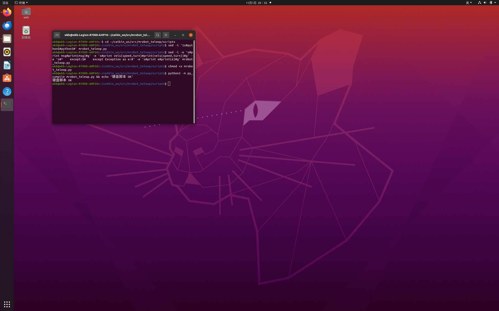
5.2 （可选）深度相机方案的 xacro 前缀
若使用 kinect 深度相机方案，6.1 已说明 Noetic 新版 xacro 不再展开不带 xacro: 前缀的宏，
需把 mrobot_with_kinect.urdf.xacro 中的 <mrobot_body/> 改为 <xacro:mrobot_body/>，
并去掉 launch 中已废弃的 xacro --inorder。本仓库的激光方案默认已正确，无需额外处理。
6. 编译工作空间
6.1 缺少 move_base_msgs 的报错
首次 catkin_make 时，原始 mrobot_navigation/CMakeLists.txt 在 find_package(... COMPONENTS ...)
中声明了 move_base_msgs。即使 gmapping 本身用不到它，catkin 在配置阶段仍会检查所有组件，
未安装时会直接报错：
-- Could NOT find move_base_msgs (missing: move_base_msgs_DIR)
CMake Error ... Could not find the required component 'move_base_msgs'.
mrobot_navigation/CMakeLists.txt:7 (find_package)
Invoking "cmake" failed
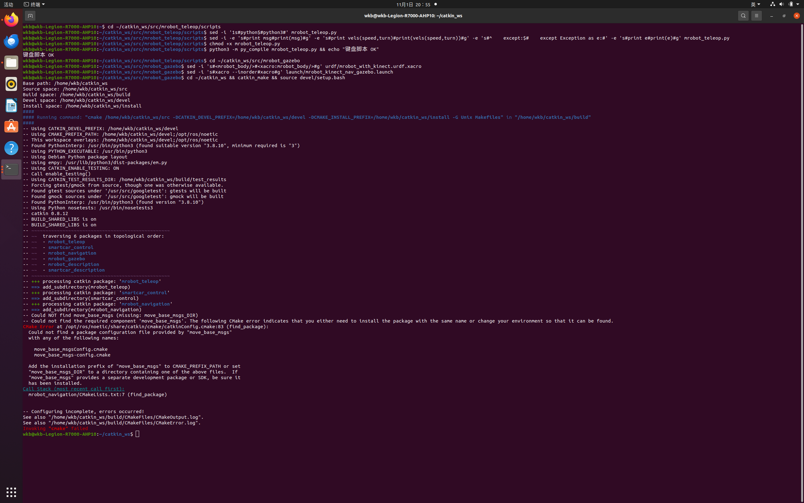
安装缺失的消息与可视化依赖（已安装的包会提示已是最新，不影响）：
sudo apt install -y ros-noetic-move-base-msgs ros-noetic-visualization-msgs \
ros-noetic-tf ros-noetic-geometry-msgs
本仓库已精简
mrobot_navigation的package.xml与CMakeLists.txt，只保留 gmapping 运行期依赖， 全新克隆并按本仓库编译时不再需要move_base_msgs；此处保留该问题以复现原始教程的排错过程。
6.2 重新编译
cd ~/catkin_ws
catkin_make
source devel/setup.bash
编译成功，末尾出现 [100%] Built target ...，中间的 Gazebo "deprecated" 黄色警告可忽略：
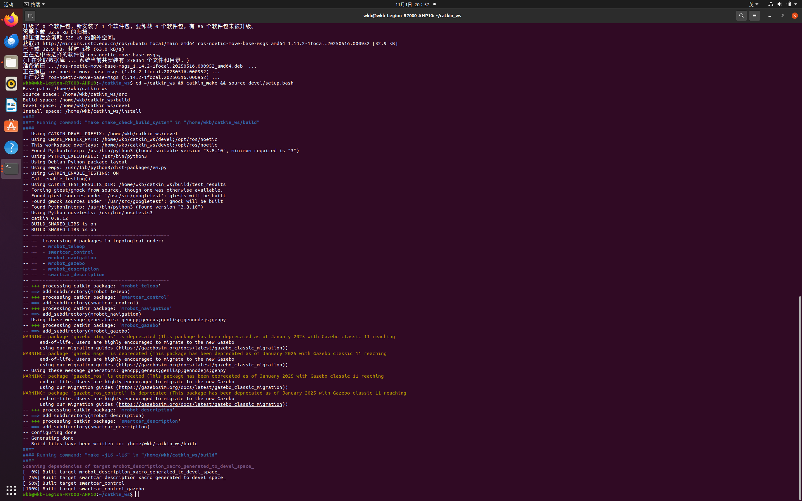
7. 启动激光 SLAM
打开 3 个终端，每个终端都先执行一次环境加载（若 ~/.bashrc 已配置可省略）：
source ~/catkin_ws/devel/setup.bash
终端 1 —— 启动 Gazebo（房间 + 小车）：
roslaunch mrobot_gazebo mrobot_laser_nav_gazebo.launch
启动日志中可看到差速插件 DiffDrive 已订阅 cmd_vel、发布 odom，激光插件 Laser Plugin 启动：
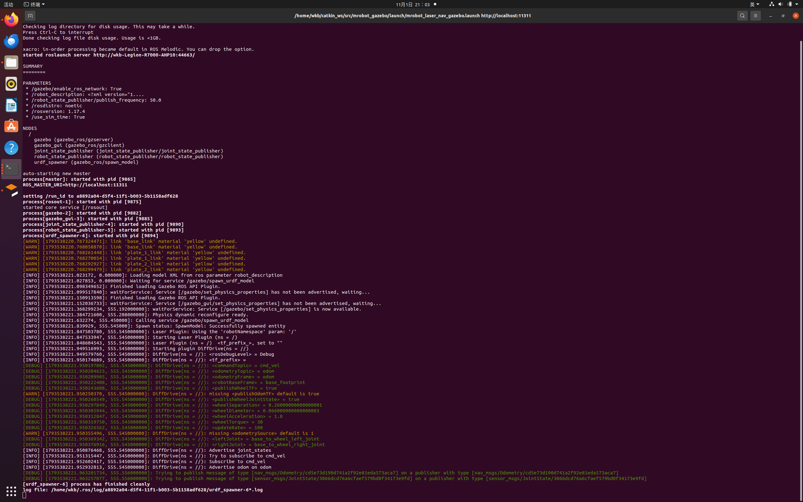
Gazebo 中加载出 6.1 手绘的 my_room 房间与 mrobot 小车：
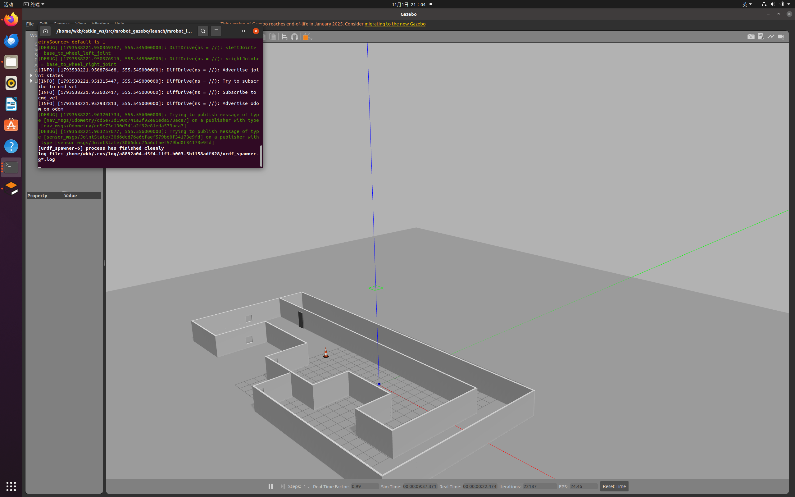
终端 2 —— 启动 gmapping，rviz 自动打开：
roslaunch mrobot_navigation gmapping_demo.launch
gmapping_demo.launch 先 include 了 gmapping.launch（启动 slam_gmapping 并加载全套参数），
再以 gmapping.rviz 启动 rviz。rviz 的 Fixed Frame 为 map，并显示 Map(/map)、LaserScan(/scan)、
RobotModel、TF 等：
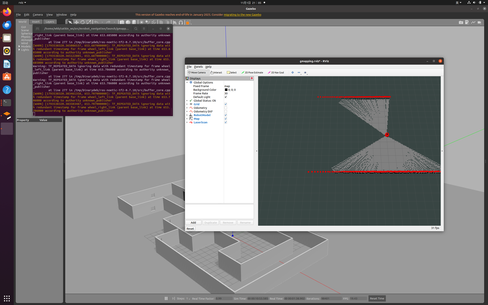
日志中可能出现
TF_REPEATED_DATA ... ignoring data with redundant timestamp警告， 这是多个发布者在同一时刻发布相同时间戳的 TF 所致，不影响建图，可忽略。
终端 3 —— 启动键盘遥控：
roslaunch mrobot_teleop mrobot_teleop.launch
出现 Control mrobot! 键位界面，初始线速度 speed 0.2、角速度 turn 1：
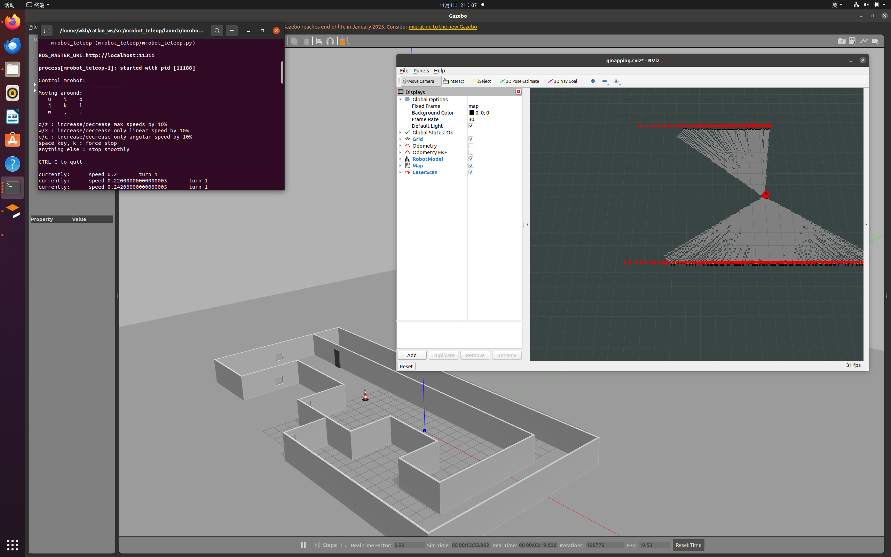
8. 键盘遥控建图
点击终端 3 使其获得焦点，用按键慢速驱动小车，让激光扫描覆盖整个房间：
| 按键 | 作用 |
|---|---|
i |
前进（建议点按） |
, |
后退 |
j / l |
原地左转 / 右转 |
u / o |
前进并左转 / 右转 |
m / . |
后退并左转 / 右转 |
k 或空格 |
强制停止 |
q / z |
同时增大 / 减小线速度和角速度 10% |
w / x |
只增大 / 减小线速度 10% |
e / c |
只增大 / 减小角速度 10% |
随着小车移动，rviz 中 /map 的可通行区域（白色）和墙体（黑色）不断扩大：
8.1 误触加速导致速度过高
建图过程中若误按 q/w 等加速键，线速度会被持续放大。本次实操中速度一度从 0.2 增大到
41.59 m/s（远超正常范围）。此时 rviz 中出现明显的放射状噪点，地图边缘也变得毛糙：
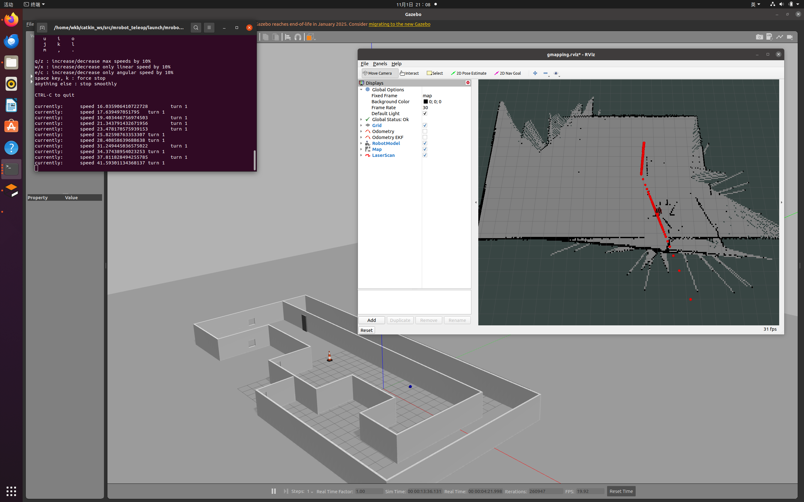
正确处理方式是：先按 k 或空格停车，再 Ctrl+C 重启 mrobot_teleop（速度重置为 0.2）；
若地图已明显错位，可一并重启 gmapping 后慢速重建。本次实操保留了该地图，其房间主体轮廓仍可辨认，
但放射噪点客观存在，改进建议见第 11 节。
9. 保存地图
建图完成后，新开一个终端，进入要保存地图的目录，用 map_server 提供的 map_saver 保存：
source ~/catkin_ws/devel/setup.bash
mkdir -p ~/catkin_ws/src/mrobot_navigation/maps
cd ~/catkin_ws/src/mrobot_navigation/maps
rosrun map_server map_saver
终端显示接收到地图并依次写入两个文件：
[INFO] Waiting for the map
[INFO] Received a 576 X 544 map @ 0.050 m/pix
[INFO] Writing map occupancy data to map.pgm
[INFO] Writing map occupancy data to map.yaml
[INFO] Done
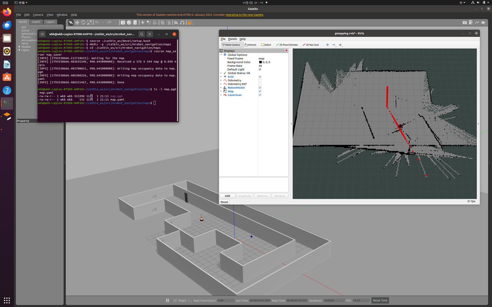
保存后可看到两个文件：
ls -l map.pgm map.yaml
# -rw-rw-r-- ... 313396 ... map.pgm
# -rw-rw-r-- ... 131 ... map.yaml
10. 地图文件解读
10.1 map.yaml
map.yaml 是地图的配置文件，本次实际内容：
image: map.pgm
resolution: 0.050000
origin: [-13.800000, -13.800000, 0.000000]
negate: 0
occupied_thresh: 0.65
free_thresh: 0.196
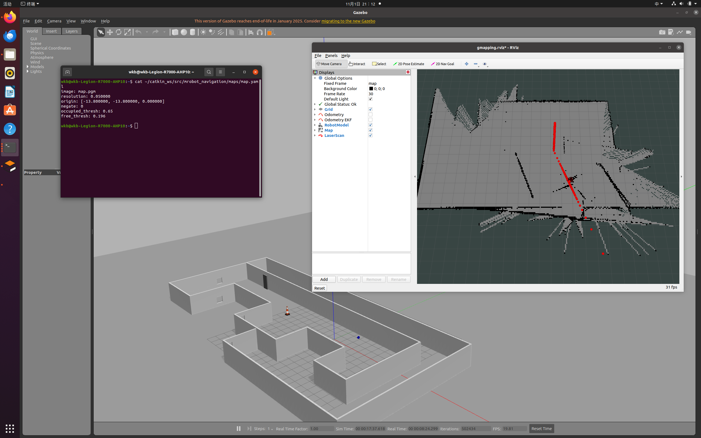
各字段含义：
| 字段 | 本次取值 | 含义 |
|---|---|---|
image |
map.pgm |
地图图像文件路径 |
resolution |
0.05 |
分辨率，米/像素 |
origin |
[-13.8,-13.8,0] |
地图左下角在世界坐标系中的位姿（x,y,偏航角） |
negate |
0 |
是否反转图像的黑白含义，0 表示不反转 |
occupied_thresh |
0.65 |
占据概率大于该值判为障碍物 |
free_thresh |
0.196 |
占据概率小于该值判为空闲 |
10.2 map.pgm
map.pgm 是 PGM（Portable Gray Map）格式的灰度图像，可用图像查看器打开。
本次地图 576×544 像素，中部为建出的房间轮廓，周围放射状短线即高速建图产生的噪点：
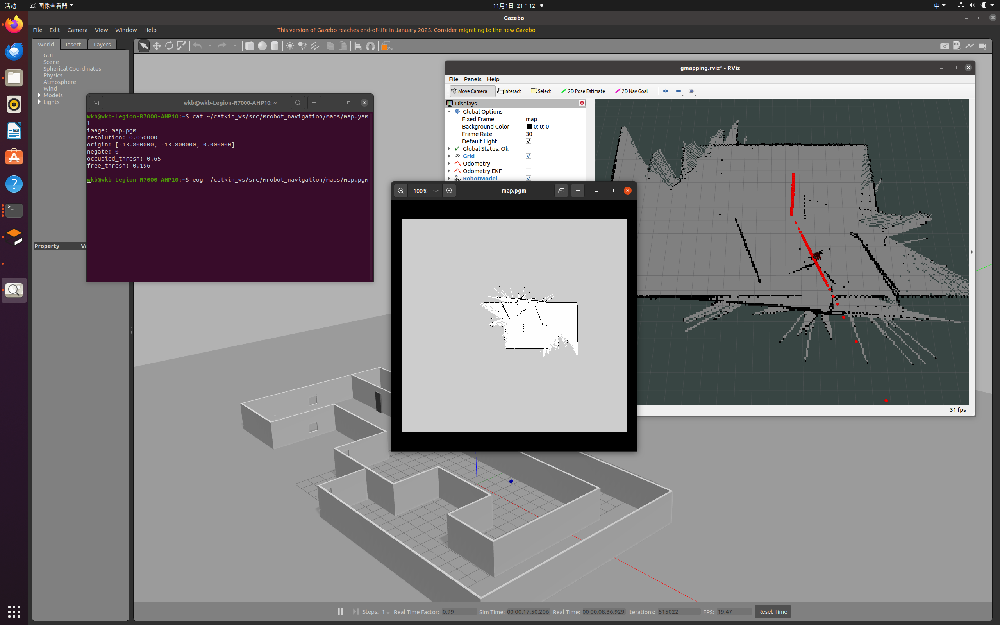
11. 建图质量分析与改进
11.1 本次问题
- 遥控时误触加速键，线速度最高达 41.59 m/s，激光帧率与里程计跟不上快速运动；
- 高速下相邻帧之间位移过大，扫描匹配退化，地图出现放射状噪点、边缘毛糙，严重时会重影错位；
- 地图四周存在未观测的灰色区域，说明部分空间覆盖不足。
11.2 改进建议
- 慢速建图：线速度保持 0.2 m/s 左右，转弯采用点动，避免长按方向键；
- 不要误触加速键：
q/w/e会放大速度，开始前确认底部为speed 0.2； - 全覆盖：规划路线走遍每个房间和角落，开门、过门时减速，减少灰色未知区；
- 走闭环：尽量回到经过的位置形成环路，利用回环修正累计误差；
- 必要时重跑：若出现明显重影，重启 gmapping 与 teleop 后慢速重建，可获得更干净的地图；
- 参数调优：环境更大时可适当增加
particles，并根据雷达量程调整maxUrange、maxRange。
12. 常见问题
| 现象 | 原因 | 解决 |
|---|---|---|
can't locate node [mrobot_teleop.py] |
脚本无可执行权限 | chmod +x 对应脚本 |
SyntaxError: invalid syntax（print 附近） |
Python2 脚本跑在 Python3 | 改为 print(...)，shebang 改 python3 |
cp: 无法获取 '/robot_mrobot/...' |
shell 变量为空 | 用绝对路径，命令自包含 |
Could NOT find move_base_msgs |
CMake 声明的组件未安装 | 安装 ros-noetic-move-base-msgs |
| rviz 全局状态报错、无地图 | Fixed Frame 或 TF 错误 | 确认 Fixed Frame 为 map，检查 TF 链 |
| 地图放射噪点/重影 | 速度过快、扫描匹配失败 | 减速、全覆盖、走闭环，必要时重跑 |
TF_REPEATED_DATA 警告 |
同时间戳重复 TF | 不影响建图，可忽略 |
13. 小结
本节完成了 gmapping 激光 SLAM 的完整流程：安装依赖 → 复制并适配功能包 → 编译 →
三终端启动 Gazebo/gmapping/键盘 → 遥控遍历房间 → map_saver 保存地图，并解读了
占据栅格地图与 map.yaml 的六个字段。下一节将基于保存的地图，使用 AMCL 进行定位并
结合 move_base 实现地图内的自主导航。